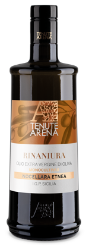
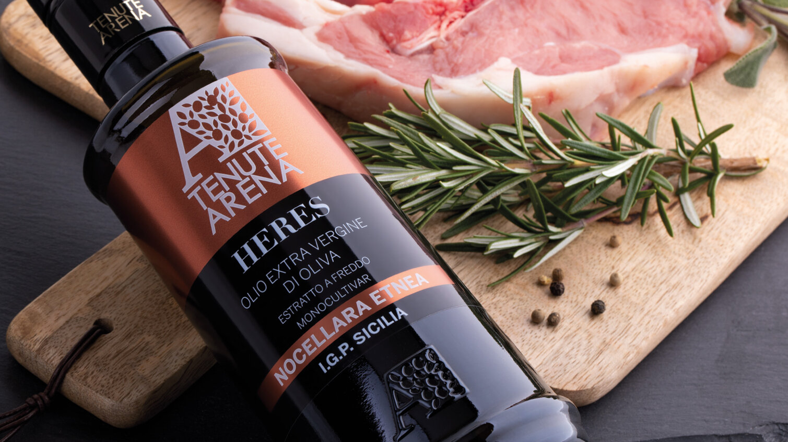
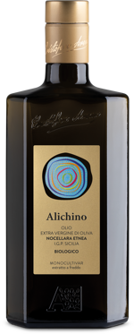
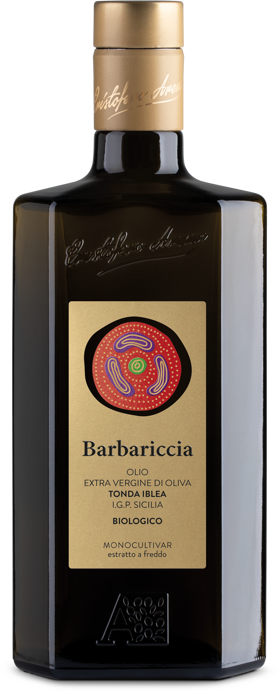
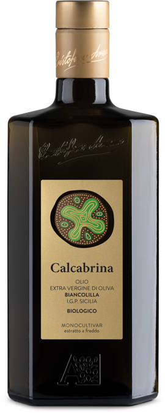
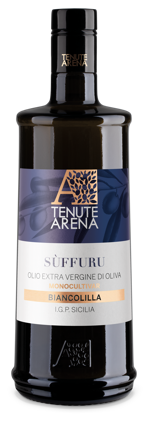

Linea Sigillo
Oli monovarietali sigillati, espressione più pura delle nostre cultivar autoctone.
Scopri
Scopri la nostra selezione di olio d'eccellenza
Scopri le nostre lineeL'Olio Extra Vergine di Oliva Biologico Tenute Arena è prodotto con cultivar biologiche autoctone siciliane, più resistenti alle condizioni climatiche sfavorevoli e alle piante infestanti.
Le nostre olive biologiche sono raccolte a mano aspettando il giusto grado di maturazione, e subiscono un'estrazione a freddo rigorosamente nella stessa giornata in cui vengono raccolte: così otteniamo il miglior olio, ricco di profumi e di qualità nutritive.
Conosci la storia
Dalla tavola di casa alla grande ristorazione, ogni linea nasce dalle stesse campagne alle pendici dell'Etna, lavorata con cura artigianale.

Tenuta Arena è l'espressione della sensibilità e dell'entusiasmo di una nuova generazione che continua la tradizione di famiglia iniziata nel 1966.
Da sempre guidati dalla passione per la coltivazione dell'ulivo e dall'amore per la terra, ogni anno in autunno rinnoviamo la magia dell'olio, tramandando ricette e gesti che appartengono alla nostra famiglia da generazioni.
Conosci la storiaCinque cultivar autoctone, cinque anime della Sicilia. Ogni bottiglia racconta un territorio, un profumo, una storia.

I.G.P. Sicilia · Biologico

I.G.P. Sicilia · Biologico

I.G.P. Sicilia · Biologico

I.G.P. Sicilia
I.G.P. Sicilia

Custodiscono le nostre pregiate bottiglie di oli monovarietali insieme a delle ciotoline personalizzate in ceramica.
Una proposta raffinata e contemporanea, perfetta per portare in dono l'eccellenza della Sicilia.
Scopri le Gift BoxProdotti raccolti dalle nostre campagne, alle pendici dell'Etna, e lavorati con ricette tramandate nel tempo per rievocare i sapori della memoria.
Pagamenti sicuri e certificati attraverso il circuito PayPal, con tracciabilità di ogni transazione. Carta di credito e conto PayPal.
Spedizione sicura con corrieri specializzati nel trasporto rapido, in qualsiasi luogo vi troviate. Decidi tu quando e dove ricevere il tuo ordine.
Scopri le nostre linee di Olio Extra Vergine di Oliva Biologico e le idee regalo.
Esplora le linee